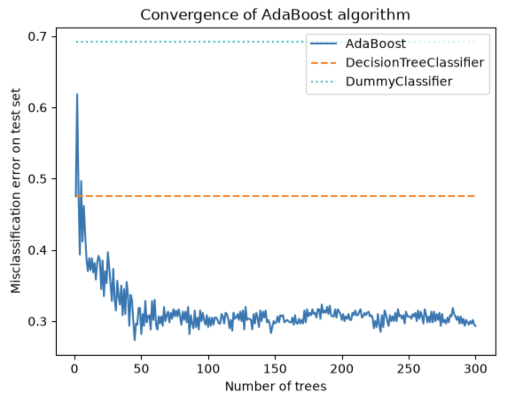
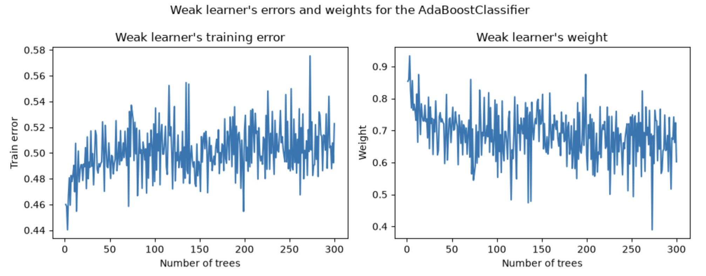
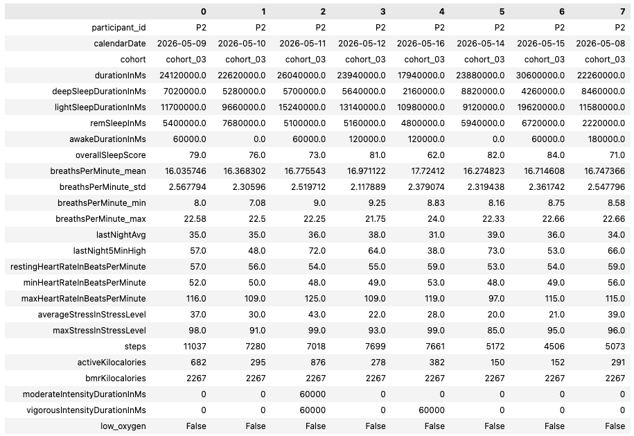
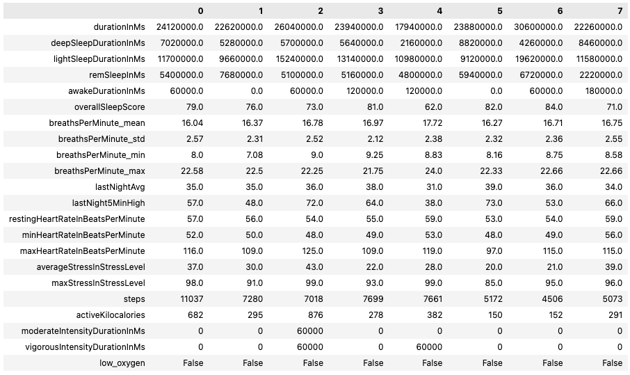
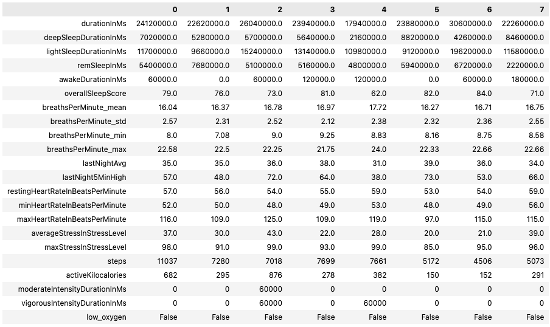
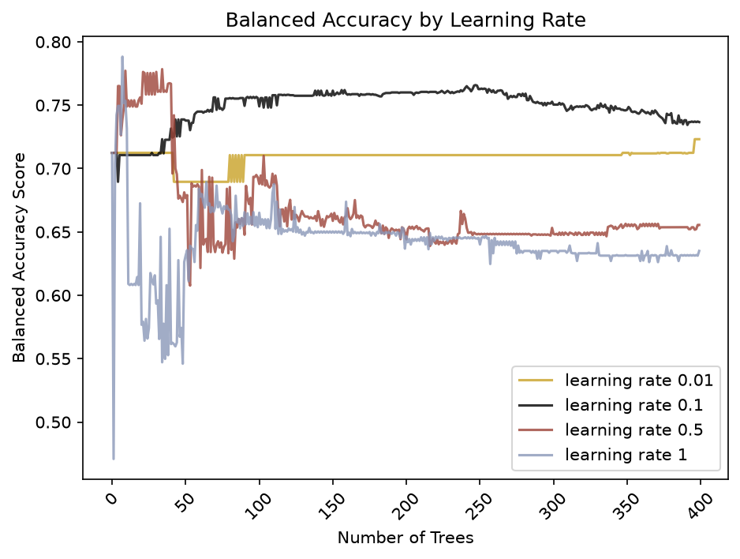
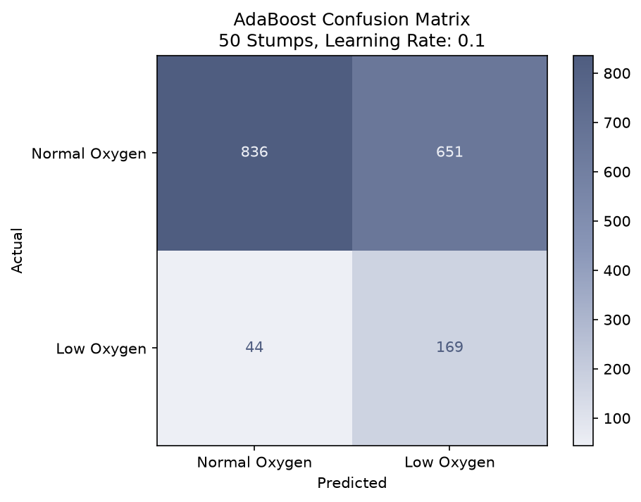

- Overview: boosting vs. bagging, decision stumps, row reweighting, alpha, the weighted vote; at least two images.
- Data: labeled sample, training and testing sets (images + links), how the split was made, why disjoint, the one-hot encoding step.
- Code: AdaBoostClassifier, link to the notebook.
- Results: confusion matrix and accuracy, tuning n_estimators and learning rate, validation accuracy as rounds are added; comparison with the decision tree (which did best, and by how much).
- Conclusions: what this says about the topic.
Bagging builds each tree on its own random sample of the data, drawn with replacement and the same size as the dataset, so the trees are independent and can be built in parallel. Boosting builds trees one after another. After each tree, the rows it got wrong are given more weight, so that together they make up half of the total weight, while the correctly predicted rows lose weight. Each tree's vote is then weighted by its error rate: a low-error tree gets a large say, a higher-error tree gets less, and a tree no better than a coin flip gets no say at all. The final prediction is a weighted vote of all the trees.
AdaBoost usually uses stumps, which are trees with a single split. A stump on its own is only a little better than guessing, so it always misclassifies some rows. Those misclassified rows are what give the next stump something to focus on. A large tree that got every training row right would leave no mistakes to reweight, and the boosting would stop improving. Since the weights are reassigned at every round, each new stump can split on a different feature or a different cutoff than the previous stumps.


Because AdaBoost is built from decision trees and predicts the same target (low-oxygen nights), the same dataset and participant split from the Decision Trees page were used: 8,729 nights from 47 participants. Just like on the Decision Trees page, a night is labeled low oxygen when its SpO2 falls one standard deviation or more below the group average (z ≤ −1). The training set contains 7,029 nights from 35 people (15.7% low oxygen). The testing set contains 1,700 nights from 12 people (12.5% low oxygen). No person appears in both sets. BMR was again removed because it is unique to each person and says nothing about the night itself.
One-hot encoding was not necessary because each feature that the model used was already a numeric value. In preprocessing, all of the text-based columns, like "cohort," were removed.



The code for this section was written in Python using pandas, NumPy, matplotlib, and scikit-learn (sklearn). Pandas and NumPy were used primarily for dataframe management, matplotlib was used for plotting figures, and sklearn was used for the participant-level train/test split, tuning with GridSearchCV, the decision stumps, the AdaBoost classifier, balanced sample weights, and metric reporting.
Using GridSearchCV, AdaBoost models with different combinations of parameters (5 learning rates and 5 tree counts) were ranked by their average validation balanced accuracy, scored on groups of 7 training participants at a time, and the test participants were never seen during tuning. The top two were a model with 400 trees and a learning rate of 0.01 (0.648) and a model with 50 trees and a learning rate of 0.1 (0.646). Since the two were practically tied (a 0.002 difference), the simpler model of 50 trees and a learning rate of 0.1 was chosen.
AdaBoost was successful in catching 169 out of 213 low-oxygen nights (about 4 in 5). However, it flagged 651 normal nights as low oxygen, because the balanced weighting made missing a low-oxygen night cost more than raising a false alarm.


In comparison between Tree 1 and AdaBoost, AdaBoost comes out on top. However, the margins by which it succeeds are frankly negligible. AdaBoost caught 169 low-oxygen nights compared to 162 for Tree 1, and its balanced accuracy was 0.678 to Tree 1's 0.670, a difference of 8 thousandths. They also had equal precision scores, at 21% each. Twelve test participants do not allow for much certainty one way or the other. You can flip a coin 12 times, but that does not guarantee 6 heads and 6 tails; only over a large number of flips do the counts settle to their true probabilities. In the future, these methods have the potential to be real contenders as predictive models, but the data needs more participants, not just more observations.
Both the Decision Tree and AdaBoost models hit the same upper limit, each catching about 4 out of 5 low-oxygen nights. This implies that the limit of further accuracy is the data the models had to train and make predictions with, not the models themselves. Only 47 people took part, which is really not a lot for this kind of work, and the data comes from consumer watches rather than medical-grade equipment. The readings also depend on people wearing the watches correctly, and nightly summaries may hide brief breathing changes during sleep. Heart rate drove most of the model's decisions, but the link between heart rate and oxygen could go either way: low oxygen could be affecting the heart rate, not the heart rate affecting the oxygen. Because only about 1 in 5 flagged nights was truly low oxygen, a single flag does not mean much. A more useful approach would be to see how many low-oxygen nights are flagged over a certain amount of time, and if that number is above a certain threshold, to see a doctor. A flag is a heads-up, not a diagnosis. For these methods to reach their potential, the data needs more participants, not just more observations.